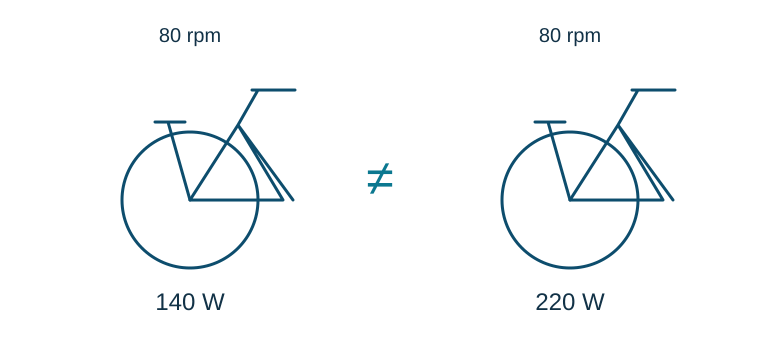

Capítulo 1
¿Qué son realmente los vatios y por qué cambian la forma de entender el ciclismo indoor?
El punto de partida para comprender qué mide la potencia y por qué dos personas pueden pedalear igual y trabajar de forma diferente.
Leer artículo →